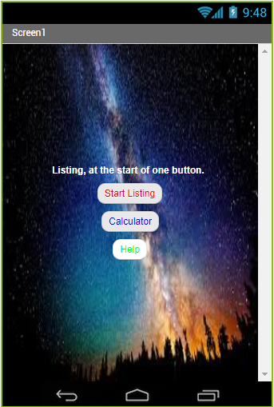
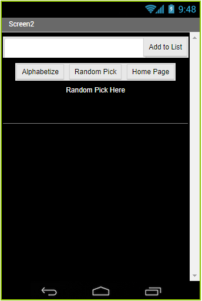
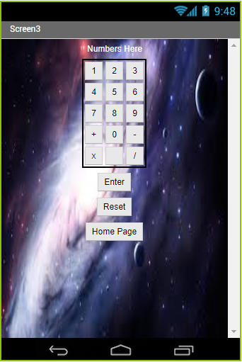
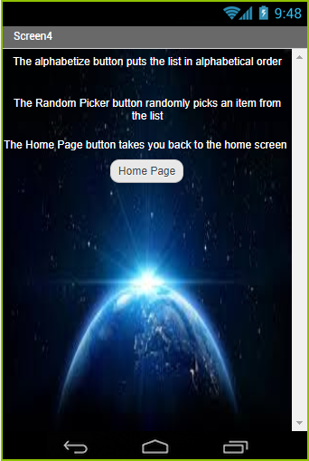

I seem to always forget what I need whenever I go to the store. What better way to solve this problem than by making an app that makes a list for you. Since a lot of people make lists for when they go shopping why not add a calculator as well.
 Screen 1 is the home page for our app. From it Screen 2 shows the listing feature which allows you to enter an item into the list. you can go to the list maker, the calculator, you also have the ability to alphabetize your list and if you cannot decide and the help page. which item to get from your list we included a random pick buttom.
 Screen 3 displays the] calculator which allows Screen 4 is a helping page which describes what each function in Screen 2 does the user to do basic math. They can also reset the calculator and go back to the home screen.
Purpose of the App
The purpose of our app is to give people the ability to make a list at will. Our app can be used to list whatever the user desires. For example, you can make a grocery list or a list of school supplies. You can also use it to keep track of homework assignments. Key features of the app include the alphabetize feature which rearranges your list in alphabetical order when clicked. Another key feature is the suggestion button that when clicked a random object from the list pops up. You can be creative and give the suggestion button different purposes. The final key feature is the calculator. The calculator is a bonus feature and allows the user to add and subtract whole numbers.